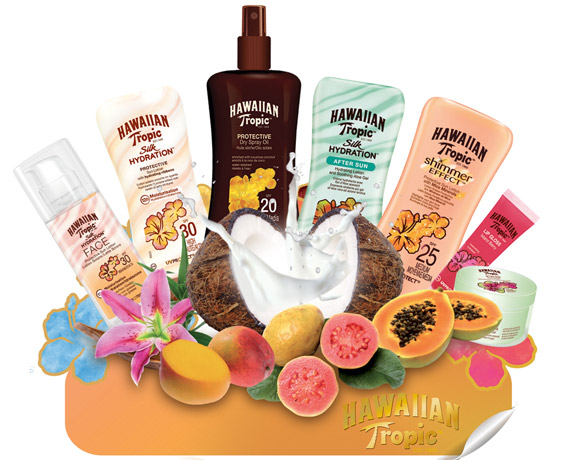

Association d'entreprises, d'institutions en vue de mener une action commune.
Hawaiian Tropic propose une large variété de produits comprenant des huiles et des lotions solaires, des après-soleil et un gloss. Nos formules sont composées d’extraits de plantes exotiques et d’ingrédients soigneusement selectionnés pour leurs bienfaits. Nos produits laissent votre peau superbe, douce et délicieusement parfumée. Profitez du soleil en toute sérénité grâce à la protection solaire contre le vieillissement cutané (rayons UVA) et les coups de soleil (rayons UVB). Les sens exaltés par un parfum tropical divin, vous êtes en vacances toute l’année!
Avène, une histoire riche qui commence dans un petit village du sud de la France. Le village d’Avène, ancien et pittoresque, est situé dans la vallée de l’Orb, au cœur du Parc naturel régional du Haut Languedoc.